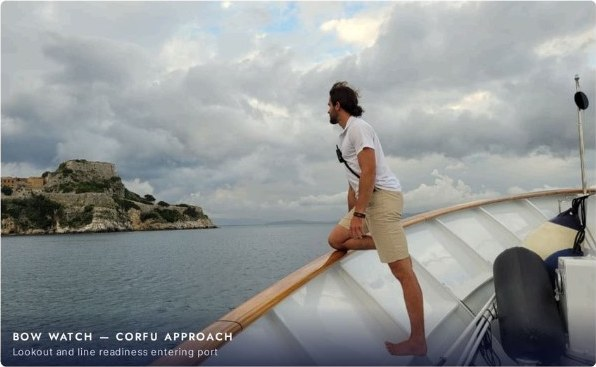

Flagship season — delivery + charter
M/Y Sealion · 32m · Apr–May 2026
Valencia → Greece · 2,500 NM
Freelance deckhand aboard a Maltese-flagged 32m motor yacht — offshore delivery passage followed by back-to-back charters covering the full Ionian archipelago: Corfu, Paxos, Antipaxos, Lefkada, Ithaca, Cephalonia and Zakynthos, with repeat anchorages run to standard.
Chase boat captain on the Axopar, including 11-mile open-water island crossings. Water toys setup, guest watersports support, guest service with interior housekeeping and laundry support, provisioning, anchoring, mooring lines, navigation and watchkeeping.
- Chase Boat Captain
- Watchkeeping
- Guest Watersports
- Provisioning
- Navigation
- Anchor Ops